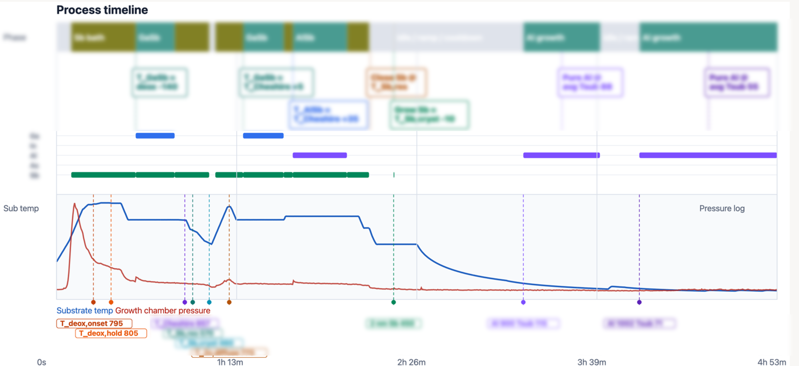

SQLite/Datasette Growth-Run Import/QC
Public-safe demonstration of an MBE provenance workflow: raw control-point exports are imported into SQLite, converted into Datasette-readable views, segmented into candidate growth windows, and summarized with timeline/QC artifacts.
What This Demonstrates
Structured Import
Tabular growth exports are normalized into a queryable SQLite database with run metadata, headers, and measurement rows.
Datasette Views
Readable SQL views expose clock time, substrate temperature, shutter state, source setpoints, and vacuum proxies for browser inspection.
Growth-Run QC
Detected hot/growth intervals are checked for duration, temperature range, shutter logic, and summary-table consistency.
Visual Output
Scripts generate timeline and stack-schematic artifacts that make growth provenance easier to audit before analysis.
Workflow
import_growth_export.py maps headers, metadata, and rows into SQLite.create_readable_views.py creates Datasette-friendly inspection tables.detect_growth_runs.py identifies candidate hot/growth intervals.Representative Process Timeline

Real timeline visualization from the private workflow, published as a redacted public process example. Sensitive labels, raw exports, full SQLite records, and run/sample identifiers remain private.
Source Scripts
import_growth_export.py Core
Imports growth control-point exports into normalized SQLite tables with metadata and measurement rows.
create_readable_views.py Core
Builds browser-friendly SQL views intended for inspection in Datasette or another SQLite viewer.
detect_growth_runs.py Core
Detects candidate growth windows from substrate-temperature and run-window heuristics.
import_detect_visualize.py Workflow
Runs the import, detection, view refresh, and visualization steps as a single reproducible command.
generate_growth_timeline.py Visualization
Generates HTML/SVG timelines from detected intervals so growth histories can be reviewed visually.
generate_stack_schematic.py Visualization
Builds simplified stack schematics from detected growth segments for quick layer-order auditing.
create_bfm_analysis_views.py Beta
Creates analysis views for beam-flux-monitor and ion-gauge proxy checks. Included as developing workflow code.
analyze_deox_temperature.py Beta
Summarizes deox-temperature observations from structured records. Public examples are intentionally sanitized.
How To Inspect It
Open the source links above to inspect the actual Python workflow. The public page is meant to be the human-readable front door; the scripts show how the import, Datasette view generation, run detection, and QC artifacts are assembled.
Privacy Boundary
The private repository remains the source of truth for real raw exports, full SQLite snapshots, facility notes, private growth annotations, and unpublished run-level details. This public mirror includes scripts, sanitized documentation, a selected de-identified timeline image, and synthetic/example visuals.